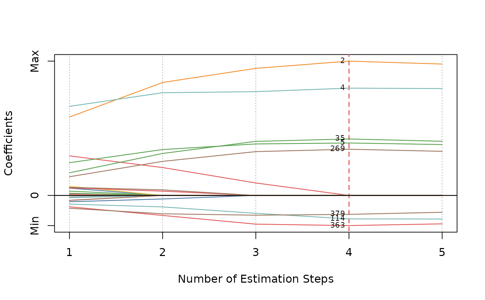
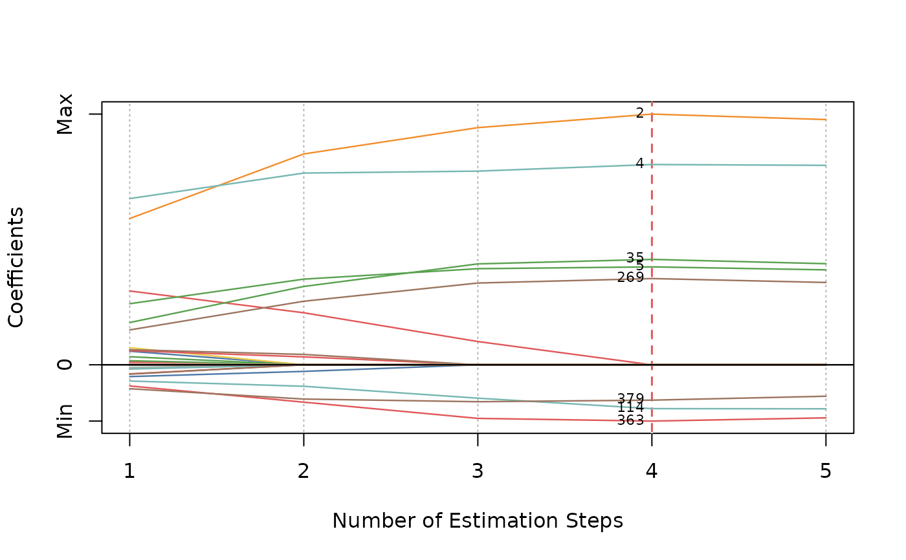
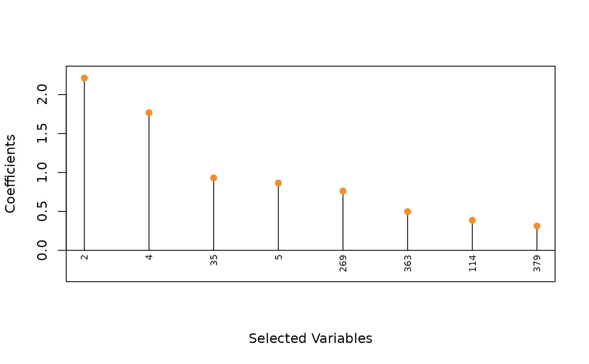
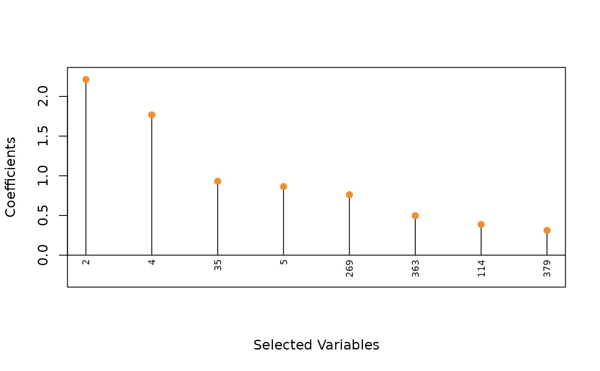

Plot msaenet model objects.
Arguments
- x
An object of class
msaenetproduced byaenet,amnet,asnet,msaenet,msamnet, ormsasnet.- type
Plot type,
"coef"for a coefficient path plot across all estimation steps;"criterion"for a scree plot of the model evaluation criterion used (CV error, AIC, BIC, or EBIC);"dotplot"for a Cleveland dot plot of the coefficients estimated by the model at the optimal step.- nsteps
Maximum number of estimation steps to plot. Default is to plot all steps.
- highlight
Should we highlight the "optimal" step according to the criterion? Default is
TRUE.- col
Color palette to use for the coefficient paths. If it is
NULL, a default color palette will be assigned.- label
Should we label all the non-zero variables of the optimal step in the coefficient plot or the dot plot? Default is
FALSE. IfTRUEandlabel.vars = NULL, the index of the non-zero variables will be used as labels.- label.vars
Labels to use for all the variables if
label = "TRUE".- label.pos
Position of the labels. See argument
posintextfor details.- label.offset
Offset of the labels. See argument
offsetintextfor details.- label.cex
Character expansion factor of the labels. See argument
cexintextfor details.- label.srt
Label rotation in degrees for the Cleveland dot plot. Default is
90. See argumentsrtinparfor details.- xlab
Title for x axis. If is
NULL, will use the default title.- ylab
Title for y axis. If is
NULL, will use the default title.- abs
Should we plot the absolute values of the coefficients instead of the raw coefficients in the Cleveland dot plot? Default is
FALSE.- ...
Other parameters (not used).
Author
Nan Xiao <https://nanx.me>
Examples
# \donttest{
dat <- msaenet.sim.gaussian(
n = 150, p = 500, rho = 0.6,
coef = rep(1, 5), snr = 2, p.train = 0.7,
seed = 1001
)
fit <- msaenet(
dat$x.tr, dat$y.tr,
alphas = seq(0.2, 0.8, 0.2),
nsteps = 5L, tune.nsteps = "bic",
seed = 1002
)
plot(fit)
plot(fit, label = TRUE)
 plot(fit, label = TRUE, nsteps = 5)

plot(fit, type = "criterion")
plot(fit, label = TRUE, nsteps = 5)

plot(fit, type = "criterion")
 plot(fit, type = "criterion", nsteps = 5)
plot(fit, type = "dotplot", label = TRUE)
plot(fit, type = "criterion", nsteps = 5)
plot(fit, type = "dotplot", label = TRUE)
 plot(fit, type = "dotplot", label = TRUE, abs = TRUE)

# }
plot(fit, type = "dotplot", label = TRUE, abs = TRUE)

# }